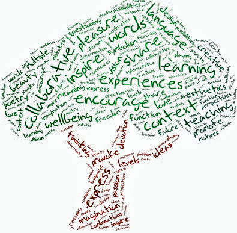

Do Not Stifle
CREATIVITY
Environmental Effects
How the environment influences our creativity:
Being somewhere familiar means that the person is less likely to feel on edge, and they'll be able to think more creativly.
Light can also impact thinking; the best light, accoring to my source, is natural light because it helps people be less anxious, and feel happier and more productive.
The ideal amount of noise for when you need to think would be at a moderate level.
The tempratue of the room can also help people be more creative; a scientific study showed that the best temprature would be 68 degrees fahrenheit compared to average room temprature of 77 degrees fahrenheit (though i think that sound too cold).
Lastly we have colors. More colors result in more playful thinking which would stem into a boost in creativity.
How we can impact the environment with our creativity:
Throw things away less by Reducing amount of stuff you use, Reusing things when you can, & Recylcing. Maybe you'll find new ways to Reuse stuff.
Volunteer to help pick up trash.
Educate yourself and others about how to help the world. Maybe you can find new ways.
Find creative ways to not waste water.
Find ways to make less pollution.
Find ways to use less toxic chemicals.
Plant trees.

I am Adiba Rana. My school email is adiba_rana@student.davincischools.org